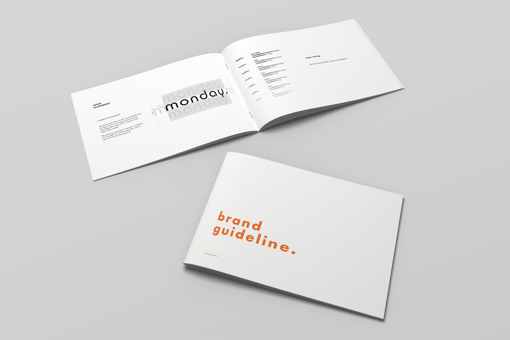
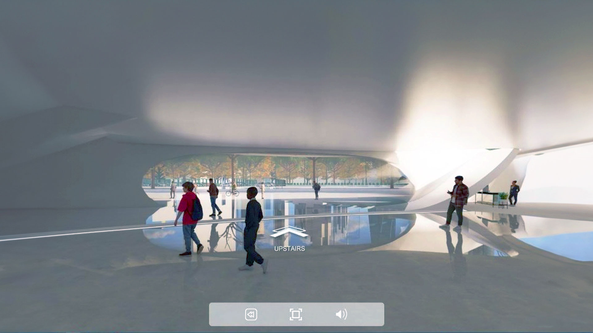
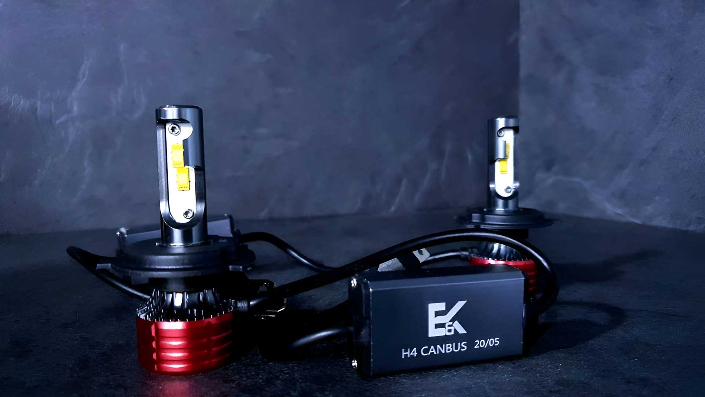

Hi, I'm Hong, a Vancouver-based designer who turns complex ideas into simple, impactful designs. I’m experienced in both Graphic and Product Design, and I am determined to balance visual aesthetics and practicality in my designs.
My design philosophy places a strong emphasis on usability and accessibility, ensuring that the end product not only looks visually appealing but is also user-friendly and easily accessible to a wide audience.
My core competencies include Adobe Creative Cloud software, Figma, Solidworks, user research and analysis, and previsualization. I am passionate about balancing visual aesthetics and practicality in my designs, and I am always eager to learn new skills and explore new challenges.
Life through lines. Kee Wonton Noodles seamlessly blends lines with Yuwei, emphasizing visual coherence and underscoring the significance of lines. Beyond taste, it signifies the cultural legacy of Wonton Noodles across generations. Rooted in traditional Malaysian Chinese culture, Kee highlights the simplicity of Southern Guangdong Wonton Noodles:
● Carbon: Reflecting the perfect blend of dark charcoal and sparks, symbolizing traditional cooking. ● Moonstone: Serving as a bridge between carbon black and pure white, avoiding strong visual contrast. ● White: The purity of flour, a unique sight before Wonton noodles hit the pot. ● Brandy: The ever-changing color of Wonton noodles, akin to floating duckweed, adapting to its surroundings
maia is a brand that epitomizes modern luxury in the fashion realm. The visual imagery employs blurred aesthetics, creating a dreamy allure, while the applied design principles emphasize a commitment to beauty and uniqueness.The vision is to empower individuals to feel confident and beautiful in their skin through our high-quality beauty services and products. The mission is to provide exceptional beauty services and products that enhance our clients' natural beauty, while maintaining a welcoming and inclusive environment.
Develop a compelling and cohesive branding strategy for a new luxury fashion brand that reflects its unique identity and resonates with the target audience. The brand should exude sophistication, elegance, and exclusivity while conveying a sense of modernity and innovation. The challenge lies in creating a visual language that captures the brand's essence, including a captivating logo, a refined colour palette, and distinctive typography. The branding should evoke a sense of aspiration and allure, establishing the brand as a symbol of prestige and high-quality craftsmanship. The goal is to create a memorable and impactful brand that stands out in a competitive fashion market and establishes a strong emotional connection with customers.
Browns Shoes Inc. is a leading Canadian fashion footwear retailer with a network of 70 stores nationwide, showcasing a diverse range of footwear brands. Headquartered in the vibrant borough of Saint-Laurent, Montreal, Quebec, the company aims to redefine its success through a comprehensive rebranding initiative. This goes beyond a mere logo transformation, extending to the integration of distinctive brand elements like colors, textures, materials, tone, and emotion.
The primary objective of this rebrand is to amplify brand recognition and solidify its position as the go-to choice for individuals seeking a versatile collection of lifestyle shoes suitable for various occasions. The guiding principles are cleanliness, modernity, and sleekness, ensuring that the revamped visual identity resonates with the brand's essence.
The Inhuman Design Language is a deliberate and strategic art direction adopted to maintain a strong focus on the showcased products, specifically shoes. In this rebranding effort, the emphasis is intentionally shifted away from significant human figures in visuals. This design language prioritizes highlighting the unique features and characteristics of the shoes, ensuring that the products take center stage in the visual narrative.

monday is an office chair project planned for market establishment but a proper brand identity is needed to stand out from the intense competition. The direction as to focus on the 4 keywords as the brand direction: Trustworthy, Resilient, Authentic & Subtle. The basic design was made using other established brands' materials as production was not in process, most notably the usage of products by Herman Miller in the website prototyping.
Guided by the Bauhaus movement's ethos of simplicity, I embraced lowercase characters for monday, inspired by the Bauhaus journal's efficiency-driven typographic approach. Crafted from the Bauhaus 93 Regular font, the logo embodies monday's dedication to supporting users in daily tasks. Symmetrical design cues signify versatile usability for various scenarios, all while maintaining a visually relaxed and approachable demeanor. The wider stance and letter spacing contribute to a calming visual effect, aligning with monday's commitment to unobtrusive yet dependable support. The logo not only reflects a visual identity but encapsulates monday's mission — to quietly stand by users, ready to assist in their daily endeavors.
This concept movie will serve as the spiritual sequel to "Kill Bill" parts one and two. Set two decades after the second film, the survivors from previous events swore to take revenge by taking down The Bride.
While maintaining consistency with the previous two films, design creativity should not be limited. The initial design theme includes a blue color tone or monochromatic tone with elements of red and yellow. The expected design includes posters that convey a sense of strength, dominance, and confidence overall. The text is powerful due to being set in uppercase, the colors contrast successfully, and the image is assured and no-nonsense. The main promotional posters from the previous two films have strong vibrant colors, reflecting the intense and action-focused genre. The design direction for this project will be based on the established styling and will continue to use vibrant colors. To create a strong consistency, complementary colors will be used, indicating that the third color option based on a color wheel, after red and yellow, is blue.
Stop Haunting Mother Nature is a advertisement series for WWF, also known as The World Wide Fund for Nature Inc., focuses on having vital environment awareness elements to suit the organization's objective. The direction focuses on the negative impact of uncontrolled human activities instead of the benefits/positive impacts of controlled human activities. This increases the visual impact and makes a stronger impression. The outcome also aims to include surprise elements for memorable impacts. A series of classic and modern horror film posters were chosen to depict the morale of the poster designs: The Shining, The Silence of the Lambs, and Halloween. These films were critically praised on their own, with strong cultural influence and relevance, further making more vital impressions. The visual elements and taglines from the original posters are all replaced with details relevant to WWF.
The Silence of the Lambs is restyled to become "The Silence of Nature". This poster shows the main character wearing a mask, an indicator of modern air pollution, instead of hinting at the recent pandemic, in which, coincidentally, wearing a mask is a norm. The Shining is restyled to become "The Humans" as a metaphor for humans being the haunting element, while a freaked-out tree represents innocence and purity. Halloween is restyled to "October 21", the day Thomas Edison invented the commercial light bulb. This hints at the beginning of the industrial revolution, which is also the beginning of mass pollution caused by human activities.
The posters are paired with the tagline "Stop haunting mother nature," reflecting the posters' origins as horror films. The outcome is a series of designs with solid pop culture relevance and a sense of familiarity with hidden surprise elements. The posters are also very subtle regarding the nature-related theme to avoid generic nature-related poster styling, making the visual outcome more appealing and unique, which suits WWF's usual advertising direction well. The focused message of this advertisement series is to implement the horror elements onto humans ourselves, having humans as the horror elements/creatures that terrorize the innocent by producing pollution to nature. This emphasizes the act of pollution being at fault by having humans at the antagonists’ side in the poster.
The call to action includes WWF’s website and a hotline number, yet the main element that triggers action is to have a memorable experience for viewers of the design outcome. Looking at the design itself, the main silhouette of the original film posters are still highly visible, only with minor parts revised to support the series’ theme: Stop haunting mother nature. This maintains a strong horror element while connects the relevance to preserving nature and reduce pollution. Multiple design elements in the design links the ads as a series, including: ● A consistent branding and texts at the bottom of each ads ● The consistency of using classic/iconic horror films as the base of the design ● Having humans as the antagonists, nature as the protagonists ● sA same message to viewers: increase the awareness of stop polluting nature
X̱wáýx̱way Album is a vinyl soundtrack album dedicated for Stanley Park located in Vancouver, British Columbia, Canada. X̱wáýx̱way, rendered in English as Xway xway and Whoiwhoi, is a First Nations village site, located in what is now Stanley Park in Vancouver, British Columbia, Canada. The village was home for many Squamish, Musqueam and Tsleil-waututh people, but after European colonization began in the Vancouver area, the inhabitants were forced to re-locate to nearby villages. The village was named for a mask ceremony; thus, the best translation of x̱wáýx̱way would be "masked dance performance". With its long and rich history, Stanely Park is no stranger to being regarded as one of the best tourist attractions in Vancouver. However, Stanley Park is more than just a tourist attraction; it is a piece of living history that behold many transition phases of Vancouver since the beginning. Being preserved and taken care of very well, its presence indicates the respect and appreciation provided by Vancouver.
The nature within the park's soul is beyond verbal description and visual representation; hence, the idea of having a vinyl album is proposed to provide a more profound reflection of Stanley Park's resourceful and iconic status. The vinyl album consists of six individual parts, which are all located in Stanley Park itself. These six themes include: ● Indigenous history, represented by Totem Poles ● Woods, represented by woods ● Waves, represented by Siwash Rock ● Land, represented by Prospect Point ● Wind, represented by Seawall ● Modernization, represented by Lions Gate Bridge.
Each of these separated themes tells a story from the past, which indicates different time eras to show the significant events and incidents that happened in the park, crafting the Stanley Park that we all know today. In addition, the pieces of vinyl have soundtracks dedicated to individual themes to be recorded on or inspired by Stanley Park. The soundtracks aim to provide an experience as if audiences are in Stanley Park, enjoying the breeze of nature from the beautiful sceneries and natural environments. The Stanley Park Vinyl Album is a tribute album to showcase the park's history and attractions. Rather than being a guidebook for tourists, the album serves as a collector's edition product. The decision to use vinyl instead of modern CDs is to strengthen the presence of Stanley Park's long history. Furthermore, this also indicates that the contemporary rendition of Stanley Park is just a minor part of its long history.
The outcome is a vinyl album designed with a monochromatic retro theme, with the six unique themes bound together into one extensive collection. The album, by its looks, shall be a relatively exclusive and premium item produced in minimal numbers. My vision for this album is to be utilized during fundraising events, which will ultimately benefit the park by raising funds and awareness to preserve its precious natural elements. The design aims to be something other than mass-produced at a low cost or convenience for bringing around. Instead, it serves as a vision of how a designer’s work can bring people together by understanding the irreplaceable value of mother nature, which brought us beautiful things that can be experienced through visual and hearing, as reflected by the vinyl in the album.
The logo reflects an amalgamation of modern aesthetics and timeless elegance, emphasizing the diversity of hijabs available. raku haru's logo was driven by the commitment to provide a carefully curated collection of hijabs that caters to the unique styles of women across various age groups.
The brand exudes a strong feminine aesthetic, carefully crafted to resonate with consumers. As a provider of affordable products, the design strikes a balance between being visually pleasing and relatable. It aims to captivate with its feminine allure while ensuring that the aesthetic remains within reach, creating an inviting and inclusive appeal for a broad consumer base.
The experimental digital product catalogue prototype for TRAPO pushes the boundaries of traditional paper catalogues. Developed and previsualized on Figma, the engaging design envisions a dynamic and eco-friendly digital product catalogue. This innovative prototype aims to revolutionize the user experience, providing an efficient alternative for presenting and exploring products beyond the constraints of paper.
Tailored for offline sales teams and in-store promotions, the user interface prioritizes speed and efficiency. With streamlined navigation and quick access to key product details, the prototype empowers the team for seamless interactions, ensuring a swift and effective sales process. The digital catalogue prototype explores the potential of modern technology to transform the way products are showcased and experienced, offering a more sustainable and interactive approach to sales.
Embarking on the creation of a MagSafe-compatible smartphone holder posed a unique set of challenges and opportunities. Collaborating closely with a manufacturing team in China, the design process unfolded as a delicate dance between form and function.
● Benchmarking Flagship Design
With two existing smartphone holders already in the market, this design aspired to be the benchmark for the company's flagship smartphone holder model. While other models were mere rebrands or reskins of generic phone holders, this design emerged as a distinctive silhouette featuring the company logo.The incorporation of the company logo's silhouette as the main design direction strategically positioned the product within the brand identity. This design not only showcased innovation but also aligned with the brand's commitment to delivering superior, cutting-edge solutions.
● Size Optimization and MagSafe Integration
Navigating the constraints posed by size limitations, the optimization of the holder for MagSafe technology demanded meticulous attention. Striking the delicate balance between aesthetics and functionality was paramount in ensuring a seamless integration of cutting-edge technology.
● Luxurious Aesthetics with Alcantara
The deliberate choice to incorporate Alcantara, a luxurious and tactile material, added a touch of opulence to cater to the discerning tastes of car enthusiasts. However, addressing concerns related to overheating for the fabric material became a pivotal aspect of the design journey.The glow LED effect not only enhanced the holder's distinctiveness but also positioned it as a premium product. This dual-purpose feature contributed to both visibility and aesthetics, ensuring the product's prominence in a competitive market.
This MagSafe smartphone holder design journey reflects not only a commitment to technological advancement but also a keen understanding of market dynamics. Balancing luxury with practicality, innovation with branding, this design stands as a testament to the meticulous craftsmanship and strategic thinking behind creating a flagship product.

In collaboration with a dynamic team, I took the helm as the designer in crafting a Virtual Career Fair hosted online for Talentlounge. This innovative platform redefines the job-seeking experience, offering visitors an immersive and interactive environment to explore diverse career opportunities.
Design Focus:
● Immersive 3D Environment ○ Created a visually stunning 3D virtual space seamlessly integrated into our company's website. ○ Prioritized an intuitive user experience through captivating graphics and easy navigation. ● Booth Exploration and Job Categories ○ Crafted individualized booths representing distinct job categories for effortless navigation. ○ Enabled visitors to delve into each booth, uncovering a spectrum of job opportunities. ● Job Seekers Showcase ○ Implemented an interactive showcase spotlighting job seekers categorized by their respective fields. ○ Each profile features resumes, portfolios, and essential details for enhanced visibility. ● Communication Hub ○ Integrated robust communication tools for effective networking between job seekers and employers. ○ Features live chat, video conferencing, and messaging functionalities. ● Group Collaboration ○ Orchestrated a collaborative design process within the team, harnessing diverse skills and insights. ○ Ensured iterative feedback loops for a polished and comprehensive virtual fair. ● Seamless Website Integration ○ &Seamlessly embedded the virtual career fair into our company's website, maintaining consistent branding. ○ &Ensured accessibility, offering visitors a smooth transition into the interactive platform.
This project exemplifies our dedication to innovation and impactful recruitment strategies. It underscores our commitment to creating solutions that not only engage users but also elevate their overall satisfaction and experience in the job-seeking process.
Embark on a journey through innovation and connectivity with Nexus, a groundbreaking project born out of the Malaysia National Design Competition TRANSEAT in 2021. Proudly contributing to our team's success, I played a vital role in securing a position among the top 10 finalists. Nexus transcends the conventional notion of a bench; it embodies the essence of Mass Rapid Transit Corporation (MRT), highlighting the significance of linkage, continuity, and connectivity in public spaces. Drawing inspiration from the age-old "Serambi" concept of traditional Malay houses, our MRT station design creates an environment that encourages meaningful interactions and connections, mirroring the seamless flow of rail tracks that unite various stations across the expansive Klang Valley.
Meticulously crafted with Thermoplastic Elastomer (TPE) and adorned with captivating light-up effects along the bench's edges, Nexus not only captures attention but also symbolizes our unwavering commitment to shaping distinctive and engaging public spaces. The culmination of our design journey took center stage at the Malaysia Design Council in Kuala Lumpur, where we presented Nexus during the final round alongside fellow team members and competitors. This experience marked a significant milestone, showcasing our dedication to pushing the boundaries of design innovation and leaving a lasting impact on public spaces.
The internship project objective at Motorola Solutions is to complete a design process, fostering the development of software and design skills, an understanding of the design process, and effective communication abilities. Embarking on a 12-week journey, the project is divided into distinct phases, each contributing to the overarching goal: ● Research: A meticulous exploration of user needs and market dynamics, incorporating online and field research to ensure a nuanced understanding. ● Concept Development: Ideation, sketching, 2D illustration, and 3D modeling converge to conceptualize a design that aligns with user expectations and technological feasibility. ● Design Finalization: Integrating 3D renderings and models, the design concepts are brought to life, ensuring a tangible representation of the envisioned communication device.
Site visits to 14 hotels was conducted to observe across diverse price ranges, engaging in interviews, experiencing firsthand the usage of two-way radios in various scenarios, and observing communication patterns. Opportunities identified unveils challenges such as size burden, multitasking limitations, and information media restrictions. Aesthetic value reevaluation becomes imperative, prompting the inclusion of additional communication media beyond traditional verbal methods.
The final design manifests as a sleek and ergonomic two-way radio: ● Size and Features: Compact dimensions of 55 x 25 x 125 mm, excluding the antenna, with a hidden display, LED light indicator, and the iconic Motorola "M1" headphone jack. ● Controls: Meticulously designed controls, from the OK button to the channel slider, ensuring intuitive user interaction.

E&K was founded by a team of individuals passionate about automobiles, aiming to provide customers with car accessories with installation services. The logo design for E&K features a sleek and eye-catching combination of the letters E and K, creating a simple yet cool visual element that represents the essence of the brand. The design aims to capture attention while maintaining a modern and stylish appeal.